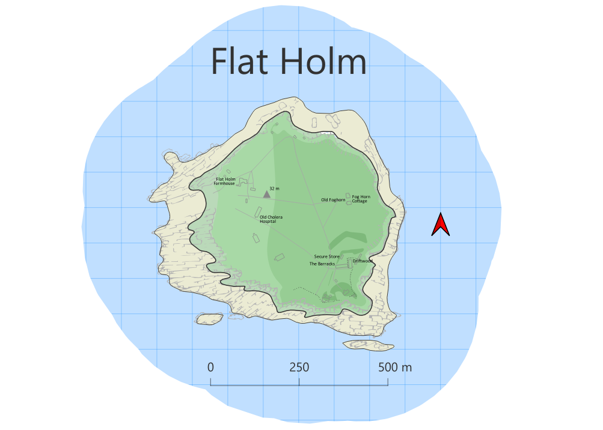
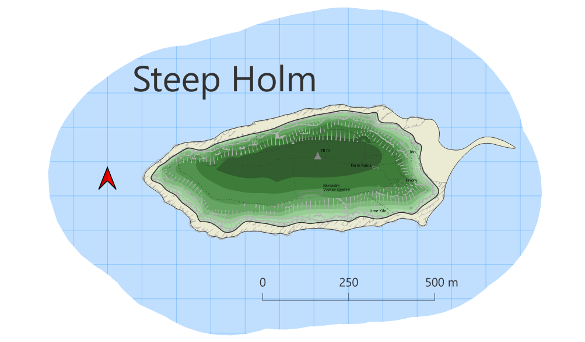

Flat Holm and Steep Holm are islands in the Bristol Channel visible from Weston-Super-Mare. I spent many happy holidays in Weston-Super-Mare staying with my grandparents.
The maps are inspired by the style of Hamish Haswell-Smith in his Scottish Islands book.


Contains OS data © Crown Copyright and database right 2022.
Also contains OpenStreetMap data © OpenStreetMap Contributors, 2022.
Lines to polygonsheight field to waterline polygons and add 0 as height. Note, this should be double, not integer data type.Symbol levels to get displaying in right order, with 0 at bottom and highest height at top.Create grid tool to create a grid which can be placed under the island. Note this doesn’t have grid coordinates, though Haswell-Smith’s maps don’t have coordinates either.